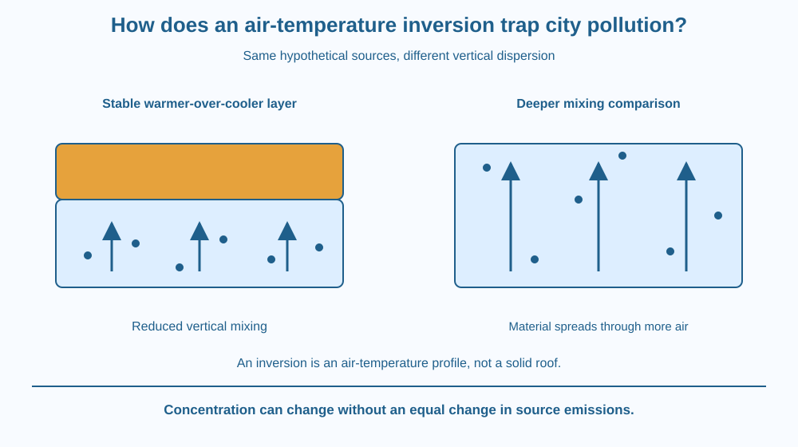

Explain how a temperature inversion can inhibit vertical mixing of polluted near-surface air. Distinguish emissions from concentration and stable layering from a solid lid. Predict how unchanged emissions can produce different local conditions when dispersion changes.
A city can experience more concentrated near-surface pollution even without a matching sudden increase in every emission source. The weather has changed how air mixes and carries material away.
One relevant arrangement places warmer air above cooler air through a layer. This can resist overturning and reduce the vertical spreading that would otherwise dilute near-surface material.
The useful question is not only how much pollutant is released, but what volume and movement of air are available to disperse it. The atmosphere is part of the concentration story.
A temperature inversion is a layer in which air temperature increases with height rather than following the more usual decreasing-with-height pattern of many lower-atmosphere situations. The definition concerns a vertical profile, not simply a cold day.
A parcel moving upward can expand and cool. Its tendency to continue rising depends on how its temperature and density compare with surrounding air. In a sufficiently stable arrangement, a displaced parcel becomes relatively cooler and denser and tends to return rather than keep overturning.
Warmer air over cooler near-surface air can therefore create stable stratification. The layer acts like a lid in an analogy, but it is not a solid barrier. Mixing can be reduced without being physically impossible in every circumstance.
Pollutants released below the stable layer may remain concentrated in a shallower region than they would under stronger vertical mixing. Their concentration depends on emission, transport, removal and the available mixing volume.
Emissions describe material released from sources. Concentration describes amount within a volume of air at a place and time. The same release rate can produce different concentrations when winds and mixing change.
Some inversions develop as the ground loses energy and cools nearby air, while air above remains warmer. Other weather situations can also produce inversions. The lesson focuses on the resulting stability rather than repeating the general thermal-radiation or liquid-convection mechanism.
Sunlight, wind or changing air masses can alter the profile and dispersion conditions. Terrain can further influence how cool air and pollutants accumulate. No single inversion duration or city-wide pollution value applies universally.
An inversion does not create every pollutant from nothing or explain all haze by itself. Chemical formation, humidity and emissions can also matter. A careful account treats the profile as one influence and avoids diagnosing current air quality from one photograph.
Draw a shallow lower air box containing source symbols and a warmer layer above. Add fewer vertical mixing arrows than in a comparison box without the stable arrangement.
Keep the source arrows equal in the two models. The contrast isolates dispersion rather than secretly increasing emissions in the more polluted-looking drawing. Show material spreading through different effective volumes.
Then replace the hard lid line with a shaded air region. This corrects the analogy before it becomes a misconception. The stability changes tendencies and mixing rates; it is not a glass roof fixed over the city.
The SVG shows cooler near-surface air under a warmer layer, with reduced upward mixing arrows. A comparison panel spreads the same hypothetical source input through a deeper region.
A vertical temperature-profile sketch identifies the inversion segment. Separate labels distinguish source release from local concentration. The diagram contains no measured city data, dates or pollutant thresholds.
The caption states that the lid is an analogy for stable layering. The picture does not repeat cyclone rotation or greenhouse absorption and does not claim that all pollution episodes share one identical weather cause.

Air-quality discussions in India sometimes mention poor dispersion and stable conditions. Understanding the mechanism helps separate a change in sources from a change in the atmosphere's ability to spread their output.
A real local assessment needs current observations of pollutants, wind and temperature structure. This lesson does not provide a present-day pollution diagnosis or personal exposure advice from an abstract diagram.
Students can use supplied profiles and maps without going outdoors to compare breathing conditions or approaching traffic sources. The paper model keeps the scientific question specific while avoiding unnecessary exposure and unsupported local claims.
Use paper, a pencil and small drawn pollutant dots.
Do not turn the dot count into a real air-quality index. The activity illustrates dilution and dispersion with invented symbols. Add a note that atmospheric chemistry and removal can alter real outcomes beyond the simple equal-dot comparison.
Why could concentration fall after mixing strengthens even if the source release has not stopped? Identify the changed transport or effective volume rather than declaring the pollutant vanished.
Now imagine stronger winds but a continuing inversion aloft. Why should one weather label not be treated as a complete prediction? Several transport directions and local conditions can operate together.
What defines a temperature inversion layer?
Answer: C — The vertical temperature trend is reversed from the usual decreasing-with-height pattern.
Why can an inversion increase near-surface pollutant concentration?
Answer: B — Stable layering can keep material within a shallower effectively mixed region.
Sources stay equal while mixing reaches a larger volume. What can happen to concentration?
Answer: A — The same amount distributed through more air can have a lower concentration.
Create a two-panel explanation with identical hypothetical emissions but different vertical mixing. Include a temperature-profile inset showing the inversion definition.
Write one limitation involving wind, terrain or pollutant chemistry. Your conclusion must not claim that a stable layer is solid or that one photograph provides a measured current concentration. The design should clarify a mechanism rather than diagnose a real city.
A pollution change can reflect how material is distributed as well as how much is emitted. The same source output in a smaller effectively mixed volume can produce a larger concentration. Distinguishing source and environment makes the observation more understandable and the next measurement question more precise.
An inversion can stabilise cooler surface air beneath warmer air, reducing vertical mixing so unchanged emissions may accumulate at higher near-surface concentrations.